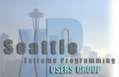
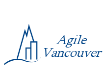

|
Northwest Agile Groups
The Pacific Nortwest is home to a large number of agile user groups.
These groups help make our area a strong center of agile software development
and provide a solid base of attendance and support to Agile Open Northwest.
We are providing this listing of agile user groups in the Pacific Northwest
so that you can connect with people interested in agile software development
after Agile Open Northwest. These groups meet for face-to-face discussions
on a regular basis to share experiences and learn from each other.
If we have missed any groups that should be listed here, please let us know.
|

|
The Seattle XP Users Group
is a group of Seattle area programmers focused on Extreme Programming
as well as other agile methodologies. The group meets monthly,
usually on the second Thursday of the month, at alternating locations
in downtown Seattle and on the East Side.
The group web site is
www.seattlexp.org.
Meetings are announced on the
extremeprogramming-seattle
group on Yahoo.
|
|
|
The Seattle Scrum Users Group
focuses primarily on Scrum but welcomes all flavors of agile. They meet
monthly at various downtown locations. They maintain a web site at
www.seattlescrum.org.
Meetings are announced on the
seattlescrum
Google group.
|
|
|
The Agile Project Leadership Network
was founded to connect, develop and support great leaders of agile
projects.
The Seattle APLN chapter meets on the first Wednesday of
each month at SolutionsIQ in Redmond. The group maintains the
apln-sea
mailing list on Yahoo.
The Portland APLN chapter holds periodic meetings and provides
announcements on the
apln-pdx
mailing list.
|
|
|
The Portland Extreme Programming Users Group normally meets
on the fourth Wednesday of each month. They maintain a web
site at http://xpdx.org and
provide announcements through the Yahoo
xpportland
mailing list.
|
|

|
Agile Vancouver is a local interest group in agile software development
methods in the Vancouver area. They host lively regular
meetings and maintain a website at
http://agilevancouver.ca.
|
|